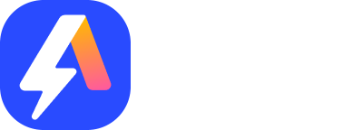
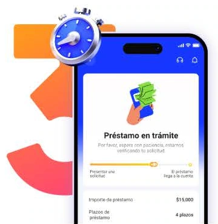
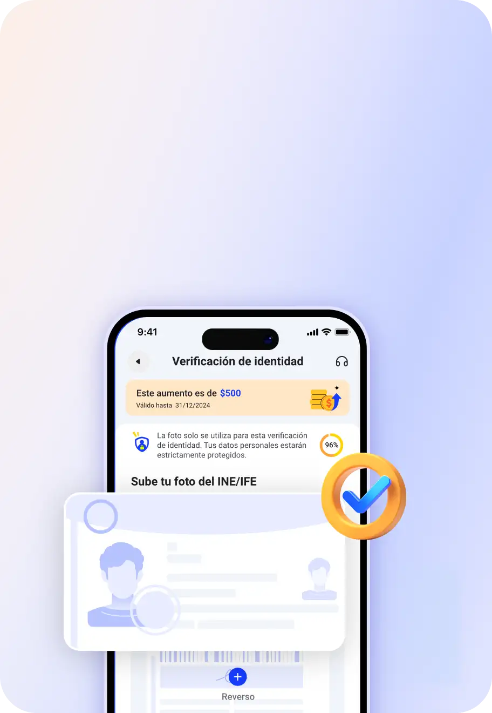

¿Cuánto pagaría si solicito $5,000?
Ejemplo a 61 días: $5,353.80 MXN en 4 pagos. Incluye $305.00 de intereses y $48.80 de IVA.
Revisar el contrato ›

Solicita en la app. Monto sujeto a evaluación crediticia.


Conoce quién está detrás de ALA y consulta el registro de nuestra entidad en SIPRES.
Ver información de la empresa ›Incluye $305 de intereses y $48.80 de IVA. Tu oferta puede variar.
Revisa el monto, el plazo y el total a pagar de tu oferta y decide si se ajusta a tu presupuesto.
Consultar los costos ›Descarga ALA, regístrate y envía tu solicitud con tu INE o IFE y una cuenta bancaria a tu nombre.
Conocer los requisitos ›
De lunes a domingo, de 9:00 a 18:00.
Recibe ayuda con tu solicitud o tus pagos a través de los canales oficiales de ALA.
Ir al centro de ayuda ›Ejemplo a 61 días: $5,353.80 MXN en 4 pagos. Incluye $305.00 de intereses y $48.80 de IVA.
Revisar el contrato ›Tasa diaria desde 0.1% (36% anual). CAT promedio 548.61% sin IVA, calculado al 30 de junio de 2026. Para fines informativos y de comparación.
Ver condiciones ›
Abre Mi cuenta → Mis préstamos en ALA. Ahí puedes verificar el saldo, las fechas y los métodos de pago autorizados.
Ver cómo pagar ›
Conoce a la empresa detrás de ALA, consulta su registro y revisa cómo tratamos tus datos.
ALA es operada por Quantum Wealth Solutions, S.A.P.I. de C.V., SOFOM E.N.R.
Consultar en SIPRES ↗Conoce qué datos se solicitan y cómo se usan.
Aviso de privacidad ›Revisa los términos, condiciones y costos antes de aceptar.
Contrato de préstamo ›Antes de solicitar, considera cuánto puedes pagar junto con tus otros gastos.
Revisar mi presupuesto ›

Conoce los requisitos y revisa los pasos antes de iniciar.
Ver preguntas frecuentes ›

Información y consejos para entender mejor tus finanzas.
Más información
Revisa tu presupuesto antes de elegir un préstamo.
Leer la guía
Descarga la aplicación de ALA y regístrate. Completa la solicitud, agrega tu identificación y una cuenta bancaria a tu nombre.
Necesitas tu INE o IFE vigente y una cuenta bancaria propia. Debes ser mayor de edad y contar con nacionalidad mexicana.
Abre la aplicación de ALA para consultar el estado de tu solicitud.
No. Cada solicitud se evalúa de forma individual.
ALA ofrece montos de $100 a $50,000 MXN. El monto autorizado depende de tu evaluación crediticia.
Consulta el monto, el plazo y el costo total en tu oferta y contrato, antes de aceptar.
En ALA, abre Mi cuenta → Mis préstamos para consultar tu saldo y fecha de pago.
Consulta tus opciones de pago y ayuda en nuestros canales oficiales.
Descarga ALA y consulta las condiciones de tu oferta desde la app.